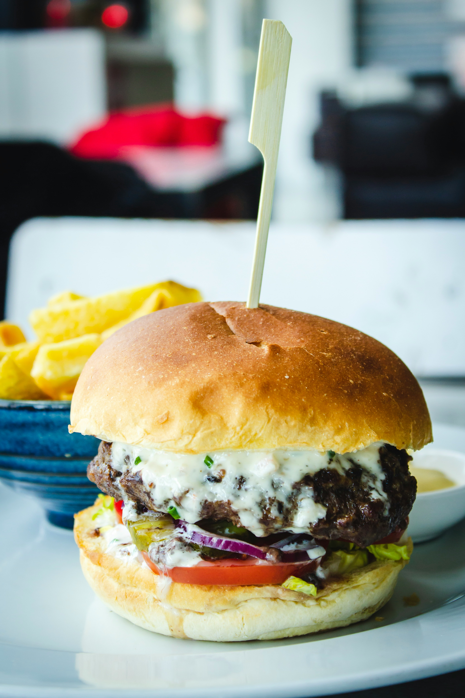

Pork Burger

Description
A homemade pork burger made with a seasoned pork patty,
melted cheese, fresh vegetables, and a soft toasted bun.
Ingredients
- 1 burger bun
- 150 g ground pork
- 1 slice of cheese
- 2 slices of tomato
- 2 to 3 slices of onion
- 1 lettuce leaf
- 1 tablespoon mayonnaise
- 1 tablespoon ketchup
- Salt, to taste
- Black pepper, to taste
- 1 teaspoon cooking oil
Steps
- Season the ground pork with salt and black pepper.
- Shape the pork into a round patty slightly wider than the bun.
- Heat a pan and add a small amount of cooking oil.
- Cook the patty thoroughly until it is no longer raw in the center.
- Place the cheese on the patty near the end of cooking and allow it to melt.
- Lightly toast the cut sides of the burger bun.
- Spread mayonnaise and ketchup on the bun.
- Add the lettuce, tomato, onion, and cooked pork patty.
- Place the top half of the bun over the filling and serve.
🏠